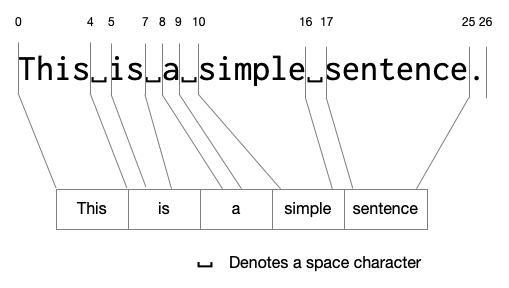
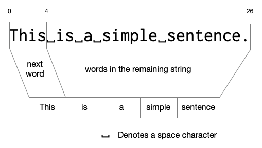

Parsing¶
We represent many kinds of data as text – i.e. as a sequence of characters. Computing with such data therefore involves two processes –
Given the data, represent it as a sequence of characters. What
displaydoes in Racket, for example.Given a sequence of characters and information about what structure it has, produce the data that it corresponds to.
While we’re familiar with the first, the second type of computation is called “parsing” and is a very useful category of programs to examine.
List of words¶
Let’s take a simple program that, when given a string (i.e. a sequence of characters), produces a “list of words” in the order they’re found in the string. We have to define exactly what we mean in this problem first. To start with, what is a “word”? Also importantly, what is “not a word”?
Some examples –
It is clear that in “This is a simple sentence”, the “This”, “is”, “a”, “simple” and “sentence” are all words we expect to collect. We might now surmise that words are separated by white space characters. So in both
"hello world"and"hello world"there are only the two words “hello” and “world”.How about
"Roy said 'hello!' to Madhan."? According to our rule above, we’ll end up treating “Roy”, “said”, “‘hello!’”, “to” and “Madhan.” as the “words” in the string. While “Roy”, “said” and “to” seem alright, we perhaps want to treat “hello” and “Madhan” as the words and not “‘hello!’” or “Madhan.”. Maybe now we wish to change the rule to include both whitespace and punctuation characters to be ignored.Note
In every step we’re trying to construct examples that might not conform to the rules we made up in the preceding steps. The idea is to have each step give us some information about our as yet unknown rule for “word”, and checking a conformant example is not going to reveal any new information about our inner sense of what a “word” is.
Now we have to think of something that is neither an alphabetical letter nor a punctuation. How about an emoji? What should be the result for the string
"Roy said 'hello😀' to Madhan."? Should we treathello😀as one word? Perhaps not. So maybe we stick to “words are made of contiguous alphabetic characters”.So now we need to ask the question “are there any words that don’t consist of contiguous alphabetic characters?”. Sure enough, we have hyphenated words like “left-handed” or “two-thirds”. If the string given has a Racket program in it, we might even have a sequence of characters like
call-with-input-filewhere there are multiple hyphens in a contiguous sequence. Ok so do we permit hyphens in our words?Note
This is a choice. The choice might be dependent on the circumstances under which we wish to employ such a word collector procedure. If we’re looking to find all dictionary words, then we need to have a dictionary. If we’re trying to understand the language of emojis, we might want to treat each emoji character as a word in its own right, or perhaps a sequence of emoji characters as a word as well.
To keep things simple, we might just use the rule “contiguous sequence of alphabetical characters” and stick to whatever turns out.
Task
Think about how making such a compromise can have ethical consequences when applied to a particular scenario. List them down. Don’t worry about whether the consequence is significant or not for the moment.
So, are there any things we might not consider to be words but conform to the above rules? What about the string being a Java program instead and using an identifier like
NetworkConnectionPool? Is that one word or three words? What if the text contains “Person1, Person2, …” and so on? Should we now include digits? Hmmm .. still, it’s a choice on our hands. Maybe we want to treat the first case as three words, or maybe keep them together to capture the idea of an identifier. Maybe we don’t want to include digits and just keep “Person”. Maybe we aren’t interested in distinguishing between lower case and upper case letters? But then should “networkconnectionpool” be a single word we collect?So you can see that thinking about the domain first and clarifying what we mean by each concept we need to model is the most important first step that determines the program we need to write. To know that, we need to know for ourselves why we want to collect words in a string – and what kind of a string that is likely to be. This is why giving a sufficiently diverse set of examples is recommended in the HtDP preface.
Since we’re learning how to program here, let’s start with keeping things simple. We’ll take a “word” to mean “longest contiguous sequences of alphabetic characters” which fits most ordinary prose. By that, what we mean is that in “hello”, “el” is not a word and “hello” is the only word since it is the “longest contiguous sequence”.
Here is how we might break it down by adding just a little bit of detail at each step -
“List of words in given string” means “List of words between the start and end of the given string”.
The start of the next word in the string is the first alphabetic character.
The end of the next word in the string is the first alphabetic character that has a non-alphabetic character after it, or is the last alphabetic character in the string.
Once we extract the next word according to (2) and (3), we can change the starting position to the character after the end of the word we just extracted and repeat the process until we reach the end of the string.
Note
This is an interesting development. Knowing that our words don’t overlap within the string means that consecutive words can only occur with an intervening non-alphabetic character (including white space). So we’ve essentially broken down the problem of “find list of words between two positions” into “find the next word” and then “find the list of words after the end of the next word until the end position”. The latter is basically the same thing we set out to solve, only now it is a smaller problem since the string is decidedly shorter this time.
Let’s collect some concept phrases from that description and clarify what they mean –
“Word” - we’ve dealt with this already.
“list of words” - Hmm we don’t know how to do lists yet! Mark it up on our TODO list ;)
“start position” - the index of the first character in the string that needs to be examined.
“end position” - the index of the last character in the string that needs to be examined.
“next word” - the first word that occurs at the head of the string from the given start position.
Our “TODO list” has one item in it - “Find out how to work with lists!”. We’ll take a little detour to sort that out.
Lists in Racket¶
Lists in Racket are constructed using the list word like (list 'one 2 'three 4 "five").
This list has 5 elements in it, two symbols, two numbers and one string.
Given a list, we can find the number of elements in it using length, like this –
> (length (list 'one 2 'three 4 "five"))
5
> (define one-to-ten
(list 'one 'two 'three 'four 'five 'six 'seven 'eight 'nine 'ten))
> one-to-ten
'(one two three four five six seven eight nine ten)
> (length one-to-ten)
10
Remember that we said in an earlier section that in the interaction window Racket will try to print out values in such a way that if you copy and paste the printed out result back in, you’ll get the same result.
That suggests to us that '(one two three ...) might be another way to construct
the same list? Let’s try that out –
> (define one-to-ten '(one two three four five six seven eight nine ten))
> one-to-ten
'(one two three four five six seven eight nine ten)
> (length one-to-ten)
10
We can get the first item from a given list using first and the index k
element from a list using list-ref.
> (first one-to-ten)
'one
> (list-ref one-to-ten 3)
'four
> (list-ref one-to-ten 0)
'one
> (list-ref one-to-ten 10)
❌ list-ref: index too large for list
index: 10
in: '(one two three four five six seven eight nine ten)
An interesting thing about a list is that if we move the opening parenthesis
in (one two three ...) one term to the right, we get another list
(two three ...). This is called “the rest of the list” and can be gotten
using the word rest.
> (rest one-to-ten)
'(two three four five six seven eight nine ten)
> (length (rest one-to-ten))
9
> (list-ref (rest one-to-ten) 2)
'four
> (list-ref (rest (rest one-to-ten)) 1)
'four
> (list-ref (rest (rest (rest one-to-ten))) 0)
'four
> (first (rest (rest (rest one-to-ten))))
'four
> (rest '(one two))
'(two)
> (rest (rest '(one two)))
'()
What list-ref really does is to keep taking “the rest of the list” while
also decrementing the index until it reaches index 0 at which point it just
uses the first. We also see that once we reach the end of a list, we get an
empty list notated as '(). The empty word also stands for this
empty list.
Ok we can take the first and rest, but if we have a list and an item,
can we construct a new list whose “first” will be the given item and whose
“rest” will be the given list? This is what the word cons does.
> (define zero-to-ten (cons 'zero one-to-ten))
> zero-to-ten
'(zero one two three four five six seven eight nine ten)
> (length zero-to-ten)
11
> (first zero-to-ten)
'zero
> (rest zero-to-ten)
'(one two three four five six seven eight nine ten)
> (cons 'one empty)
'(one)
> (cons 'one (cons 'two empty))
'(one two)
Hint
To remember cons, you can think of it as short for “construct a
list by prepending an item to a given list”.
Mapping the problem¶
So now that we know about how to build up and take apart lists, we can use this to think about “list of words”.

Fig. 7 How we’d like to map the “words” we find in a simple sentence to elements of a list.¶
The below figure shows how we wish to think of the problem.

Fig. 8 Collecting words is about finding the next word, and collecting the remaining words.¶
As long as at each stage we’re only dealing with a shorter string, we’re guaranteed to reach the end of the string at which point we can declare that we’re done.
Let’s start at the top and work out details on the way down.
(define (list-of-words text)
(must-be-a-string "list-of-words:text" text)
(define start-pos 0)
(define end-pos (string-length text))
(list-of-words-between text start-pos end-pos))
(define (list-of-words-between text start-pos end-pos)
...TBD...)
We can choose that if the start-pos is at or beyond the end-pos,
then the list of words ought to be an empty list. This gets us –
(define (list-of-words-between text start-pos end-pos)
(if (>= start-pos end-pos)
empty
...TBD...))
Now, to find the “next word”, we need to first find the start of the next word. At that point, we know that the character at the start of the next word will be alphabetic, or if there are no words remaining, the index will be at or beyond the end. Then we find the first point at which characters cease to be alphabetic and mark that as the end of the “next word”.
(define (start-of-next-word text start-pos end-pos)
(if (>= start-pos end-pos)
end-pos
(if (char-alphabetic? (string-ref text start-pos))
start-pos
(start-of-next-word text (+ 1 start-pos) end-pos))))
(define (end-of-next-word text in-word-pos end-pos)
(if (>= in-word-pos end-pos)
end-pos
(if (char-alphabetic? (string-ref text in-word-pos))
(end-of-next-word text (+ 1 in-word-pos) end-pos)
in-word-pos)))
We want to check if these are doing ok.
> (start-of-next-word "hello" 0 5)
0
> (start-of-next-word "54321go" 0 7)
5
> (end-of-next-word "54321go" 5 7)
7
> (start-of-next-word "go now." 6 7)
7
> (start-of-next-word "???" 0 3)
3
> (end-of-next-word "go now." 0 7)
2
> (end-of-next-word "go now." 3 7)
6
With these two, we can now handle picking the next word.
(define (list-of-words-between text start-pos end-pos)
(if (>= start-pos end-pos)
empty
(let ([wstart (start-of-next-word text start-pos end-pos)])
(if (>= wstart end-pos)
empty ; No more next words available.
(let ([wend (end-of-next-word text wstart end-pos)])
; Found the next word.
(define next-word (substring text wstart wend))
; The remainder of the string is from wend to end-pos.
(cons next-word (list-of-words-between text wend end-pos)))))))
Putting it all together, we have –
1(define (list-of-words-between text start-pos end-pos)
2 (if (>= start-pos end-pos)
3 empty
4 (let ([wstart (start-of-next-word text start-pos end-pos)])
5 (if (>= wstart end-pos)
6 empty ; No more next words available.
7 (let ([wend (end-of-next-word text wstart end-pos)])
8 ; Found the next word.
9 (define next-word (substring text wstart wend))
10 ; The remainder of the string is from wend to end-pos.
11 (cons next-word (list-of-words-between text wend end-pos)))))))
12
13(define (start-of-next-word text start-pos end-pos)
14 (if (>= start-pos end-pos)
15 end-pos
16 (if (char-alphabetic? (string-ref text start-pos))
17 start-pos ; The first alphabet is the start of the word.
18 (start-of-next-word text (+ 1 start-pos) end-pos))))
19
20(define (end-of-next-word text in-word-pos end-pos)
21 (if (>= in-word-pos end-pos)
22 end-pos
23 (if (char-alphabetic? (string-ref text in-word-pos))
24 (end-of-next-word text (+ 1 in-word-pos) end-pos)
25 in-word-pos))) ; The first non-alphabet is the end of the word.
Lessons
We first broke down the problem and defined the domain terminology carefully before writing a single line of code.
Then we started at the top level and freely used the defined domain
terminology to represent intermediate concepts that are needed to the
express the solution (as in list-of-words-between).
We then defined the terminology used in the code one by one. We used the values needed as arguments to guide us on how each successively defined procedure must work.
We’ll call this approach “IPD”, short for “Incremental Program Development”. This approach to writing out the code works only after you’ve figured out how to solve the problem. It works through a process of verbalizing the intended solution starting from the top-level and working your way down adding detail in each step.
How do we know it works?¶
Every procedure definition is made with some assumptions about the contexts in which it will be used, usually, by another programmer. To clarify to this programmer that we do know that the procedure works “as advertised”, we need to also tell them how we can make that claim.
One common approach is to give a collection of tests that we can demonstrate the procedure to pass. Such “unit tests” are a commonly used approach to make statements about the functionality of procedures, and also to provide examples of using the procedure in various proper and improper ways.
To express such tests, we can use the words introduced by the rackunit
package. After saving the word extractor procedure definition into a
words.rkt file, create a words-test.rkt file with the following
contents.
#lang racket/base
(require rackunit "words.rkt")
(check-equal? (list-of-words-between "hello world" 0 11)
(list "hello" "world")
"Simple case")
When we load this module in DrRacket and “Run” it, we see that there are no
errors reported. Are we done? There is an infinity of strings and positions we
can pass to list-of-words-between and how do we demonstrate that the
procedure will work in all those cases?
As you can can tell, this is a complex issue. However, programs are not written willy nilly and the expected behaviour of a procedure can usually be bracketed by a number of cases which clearly show what is expected to work and what is expected to fail. If we use Occam’s razor and choose these cases wisely, we can have an effective (though necessarily incomplete) set of unit tests that communicate the intent of the procedure well.
Fortunately, we thought through a number of these issues right before we began. So we can use those as test criteria, including some “edge cases” we haven’t discussed.
(check-equal? (list-of-words-between "" 0 0) empty)
(check-equal? (list-of-words-between "123 456" 0 6) empty)
A string can be sized arbitrarily large. So technically we should test the function on arbitrarily large strings to see if it continues to work. However, for some such cases here, we can reason our way out. For example, as long as we’re able to construct a string of a particular size, we cal use a Racket integer to represent its size and taking our function implementation makes no assumptions about the string’s size, we may take its size independence for granted. Let’s focus on the actual utility cases first.
(check-equal? (list-of-words "hello world")
(list "hello" "world")
"Single spaced")
(check-equal? (list-of-words "hello world")
(list "hello" "world")
"Multiple spaces")
(check-equal? (list-of-words "Roy said 'hello!' to Madhan.")
(list "Roy" "said" "hello" "to" "Madhan")
"Mixed words and punctuation.")
(check-equal? (list-of-words "call-with-input-file")
(list "call" "with" "input" "file")
"Idenfier-like text")
Task
Complete the other known cases we’ve articulated at the start of this section. Include your own variations as well.
Note
Since we’ve articulated the cases to be considered before we wrote the function definitions, we could’ve articulated these tests before we even wrote the function in the first place. In general doing that is considered a good idea and is referred to as “test driven development” since as you implement the procedures, you use the tests at every stage to check what aspects of the functionality you’re yet to cover. Thus the test is said to “drive” the development.